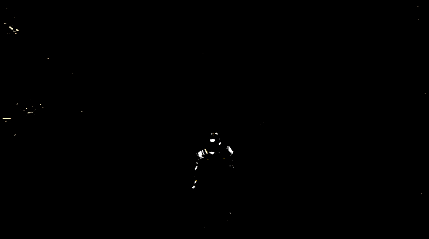
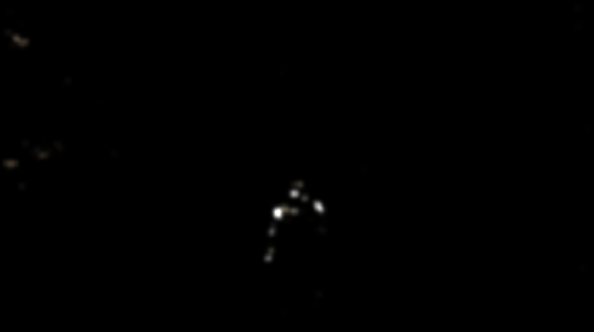
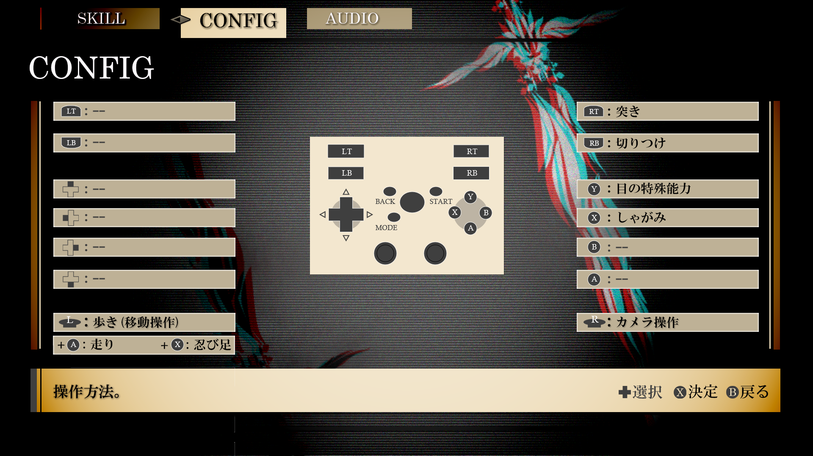
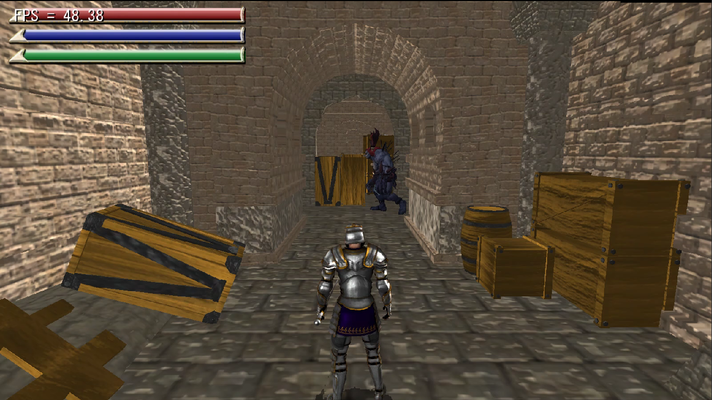
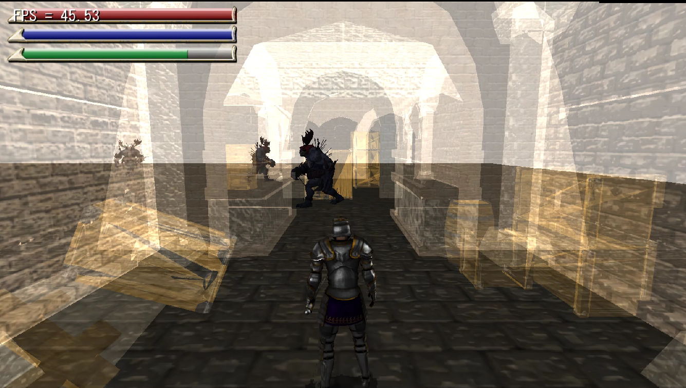
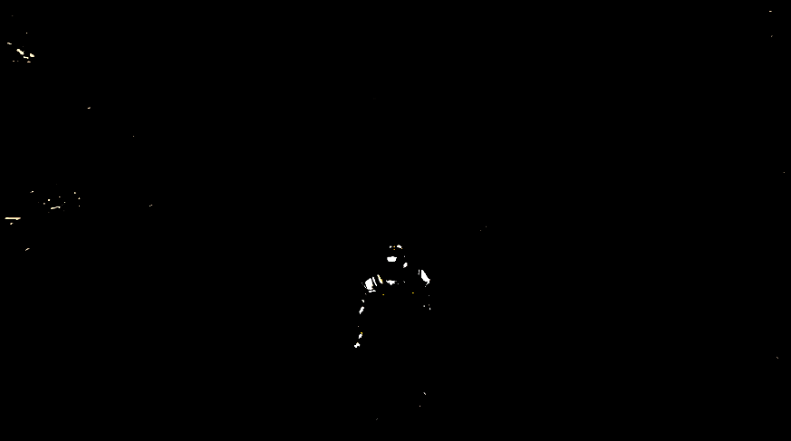
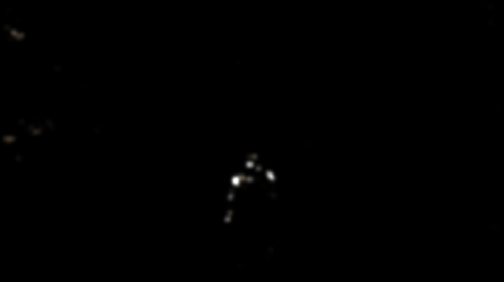

▼輝度抽出したテクスチャ

▼ブラーをかけながらダウンサンプリングしたテクスチャ

▼加算合成後

河原電子ビジネス専門学校
ゲームクリエイター科2年 中谷来斗
３人称視点のアクション型ステルスゲームで、 敵に見つからないように宝箱を探すゲームです。
▼紹介動画
学校内製エンジンを改造して使用
Visual Studio 2019
3ds Max 2021
Adobe Photoshop 2022
Git
C++
HLSL
Windows10
DirectX12
4人
2021年2月～2021年8月
上位32作品に選出されました。

▼担当ソースコード
・BackGround.cpp
・BackGround.h
・box.cpp
・box.h
・EnemyPath.cpp
・EnemyPath.h
・Fade.cpp
・Fade.h
・Floor.cpp
・Floor.h
・Game.cpp
・Game.h
・GameCamera.cpp
・GameCamera.h
・GameClear.cpp
・GameClear.cpp
・GameSound.cpp
・GameSound.h
・index.cpp
・index.h
・Menu.cpp
・Menu.h
・PAUSE.cpp
・PAUSE.h
・player.cpp
・player.h
・Retry.cpp
・Retry.h
・Title.cpp
・Title.h
・UI.cpp
・UI.h
・CollisionObject.cpp
・CollisionObject.h
・Bloom.cpp
・Bloom.h
・FontRender.cpp
・FontRender.h
・IRenderer.cpp
・IRenderer.h
・MapChipRender.cpp
・MapChipRender.h
・LevelRender.cpp
・LevelRender.h
・LightALL.cpp
・LightALL.h
・ModelRender.cpp
・ModelRender.h
・PostEffect.cpp
・PostEffect.h
・RenderingEngine.cpp
・RenderingEngine.h
・ShadowMapRender.cpp
・ShadowMapRender.h
・SpriteRender.cpp
・SpriteRender.h
・model.fx
・PostEffect.fx
・ShadowReciever.fx
・sprite.fx
モデルを描画するModelRenderクラスを改造。
通常合成と半透明合成が出来る２つの関数を用意し、
ボタン操作で切り替えれるようにしている。
▼通常合成

▼半透明合成

川瀬式ブルームを実装。
1.通常シーンをオフスクリーンレンダリング後、輝度が高いピクセルを抽出する。
2.ブラーとダウンサンプリングをかけながら複数枚のテクスチャを作成する。
3.複数枚のテクスチャの平均を取って加算合成する。
▼通常シーン
▼輝度抽出したテクスチャ

▼ブラーをかけながらダウンサンプリングしたテクスチャ

▼加算合成後
突き攻撃の際、アニメーション開始前に、
プレイヤーの前方向にコリジョンを生成し、
それがエネミーのコライダーに当たったかどうかで、
クリティカル攻撃の成功か失敗かの判定をとっている.
▼クリティカル攻撃

3dsMAX上でパスを設置し、レベルで保存 読み込みを行う。
読み込んだパスのポジションに向かって移動するようする。

エネミーがパスの場所に戻る際、コライダーをパスの座標まで飛ばし、障害物に衝突するかどうかの判定を取る。
衝突したら現在指定されているパスを次のパスに指定する。これを障害物に衝突しなくなるまで繰り返す。
これによってエネミーが壁に突っ込まないようにしました。

イベントが起きた時に周りを暗くし、見てほしいところにスポットライトを当てて、
目立つように演出しています。
▼クリティカル攻撃時

▼宝箱があるエリアに入った時